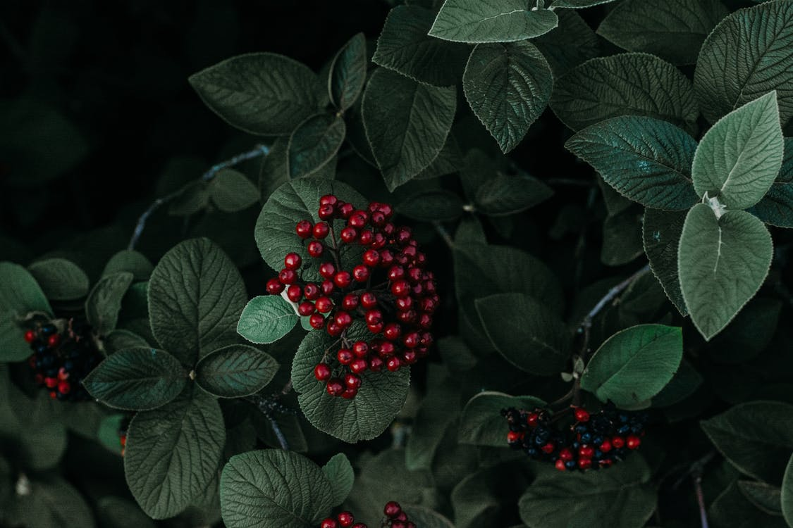

Магазин цветов
Украшения
Ветка ели
Цена: ~ руб.
Двухметровая лесная красавица, приносящая в дом запах хвои и мороза, а в сердце — предвкушение волшебного праздника, одно из самых дорогих воспоминаний нашего детства. Но не всегда можно позволить себе иметь дома или в офисе такое чудо. Небольшие композиции из натуральных еловых веток, украшенные игрушками, лентами, пайетками, цветами ручной работы, декорированными шишками, бантами и другой красотой, не займут много места, но создадут новогоднее настроение вам и вашим близким.
Лента
Цена: ~ рубей за метр
С помощью таких нарядных лент можно очень красиво украсить свои букеты и подарки. Распространённое и всегда подходящее украшение.
Бумага
Цена: ~ рублей за метр
Раньше флористы использовали только целлофановую пленку, теперь на прилавках цветочных магазинов мы видим большое разнообразие упаковок из экологически чистых материалов – картон или крафт. С их помощью можно воссоздать любой дизайн аранжировки. Ранее такая коричневая целлюлозная обертка использовалась для хранения продуктов, теперь она стала любимцем менеджеров, работающих в цветочном бизнесе. Как оказалось, она прекрасно пропускает воздух и влагу, что очень важно для срезанных растений.
Ягоды
Цена: ~ руб.
Яркие и сочные ягоды будут хорошим украшением любого букета, подчёркивая его уникальность и красоту. Мы отвечаем за свежесть ягод, но если вы боитесь заказать свежие ягоды, то ихвсегда можно заменить на искуственные.